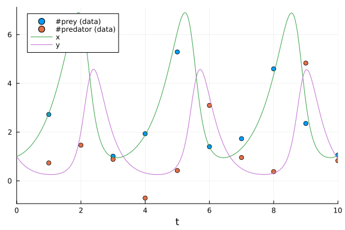

Lotka-Volterra Bayesian Parameter Estimation Benchmarks
Parameter Estimation of Lotka-Volterra Equation using DiffEqBayes.jl
using DiffEqBayes, StanSample, DynamicHMC, Turingusing Distributions, BenchmarkTools, StaticArrays
using OrdinaryDiffEq, RecursiveArrayTools, ParameterizedFunctions
using Plots, LinearAlgebragr(fmt=:png)Plots.GRBackend()Initializing the problem
f = @ode_def LotkaVolterraTest begin
dx = a*x - b*x*y
dy = -c*y + d*x*y
end a b c d(::Main.var"##WeaveSandBox#292".LotkaVolterraTest{Main.var"##WeaveSandBox#2
92".var"###ParameterizedDiffEqFunction#294", Main.var"##WeaveSandBox#292".v
ar"###ParameterizedTGradFunction#295", Main.var"##WeaveSandBox#292".var"###
ParameterizedJacobianFunction#296", Nothing, Nothing, ModelingToolkit.ODESy
stem}) (generic function with 1 method)u0 = [1.0,1.0]
tspan = (0.0,10.0)
p = [1.5,1.0,3.0,1,0]5-element Vector{Float64}:
1.5
1.0
3.0
1.0
0.0prob = ODEProblem(f, u0, tspan, p)
sol = solve(prob,Tsit5())retcode: Success
Interpolation: specialized 4th order "free" interpolation
t: 34-element Vector{Float64}:
0.0
0.0776084743154256
0.23264513699277584
0.4291185174543143
0.6790821987497083
0.9444046158046306
1.2674601546021105
1.6192913303893046
1.9869754428624007
2.2640902393538296
⋮
7.584863345264154
7.978068981329682
8.48316543760351
8.719248247740158
8.949206788834692
9.200185054623292
9.438029017301554
9.711808134779586
10.0
u: 34-element Vector{Vector{Float64}}:
[1.0, 1.0]
[1.0454942346944578, 0.8576684823217127]
[1.1758715885138267, 0.639459570317544]
[1.4196809607170826, 0.4569962601282084]
[1.876719395008001, 0.32473342927911314]
[2.5882500645533466, 0.26336255535952163]
[3.8607089092207665, 0.2794458098285253]
[5.750812667710396, 0.5220072537934558]
[6.814978999130169, 1.9177826328390666]
[4.3929992925714245, 4.194670792850584]
⋮
[2.614253967788294, 0.26416945387525886]
[4.241076127191749, 0.3051236762921916]
[6.791123785297795, 1.1345287797146113]
[6.265370675764892, 2.74169350754023]
[3.7807651118880545, 4.431165685863461]
[1.816420140681761, 4.064056625315978]
[1.1465021407690728, 2.7911706616216976]
[0.9557986135403302, 1.6235622951850799]
[1.0337581256020607, 0.9063703842886133]su0 = SA[1.0,1.0]
sp = SA[1.5,1.0,3.0,1,0]
sprob = ODEProblem{false,SciMLBase.FullSpecialize}(f, su0, tspan, sp)
sol = solve(sprob,Tsit5())retcode: Success
Interpolation: specialized 4th order "free" interpolation
t: 34-element Vector{Float64}:
0.0
0.0776084743154256
0.23264513699277584
0.4291185174543143
0.6790821987497083
0.9444046158046306
1.2674601546021105
1.6192913303893046
1.9869754428624007
2.2640902393538296
⋮
7.584863345264154
7.978068981329682
8.48316543760351
8.719248247740158
8.949206788834692
9.200185054623292
9.438029017301554
9.711808134779586
10.0
u: 34-element Vector{StaticArraysCore.SVector{2, Float64}}:
[1.0, 1.0]
[1.0454942346944578, 0.8576684823217127]
[1.1758715885138267, 0.639459570317544]
[1.4196809607170826, 0.4569962601282084]
[1.876719395008001, 0.32473342927911314]
[2.5882500645533466, 0.26336255535952163]
[3.8607089092207665, 0.2794458098285253]
[5.750812667710396, 0.5220072537934558]
[6.814978999130169, 1.9177826328390666]
[4.3929992925714245, 4.194670792850584]
⋮
[2.614253967788294, 0.26416945387525886]
[4.241076127191749, 0.3051236762921916]
[6.791123785297795, 1.1345287797146113]
[6.265370675764892, 2.74169350754023]
[3.7807651118880545, 4.431165685863461]
[1.816420140681761, 4.064056625315978]
[1.1465021407690728, 2.7911706616216976]
[0.9557986135403302, 1.6235622951850799]
[1.0337581256020607, 0.9063703842886133]We take the solution data obtained and add noise to it to obtain data for using in the Bayesian Inference of the parameters
t = collect(range(1,stop=10,length=10))
sig = 0.49
data = convert(Array, VectorOfArray([(sol(t[i]) + sig*randn(2)) for i in 1:length(t)]))2×10 Matrix{Float64}:
2.7242 6.56661 1.01166 1.93295 … 4.5961 2.35478 1.05644
0.735231 1.46374 0.884487 -0.705483 0.378981 4.83091 0.827111Plots of the actual data and generated data
scatter(t, data[1,:], lab="#prey (data)")
scatter!(t, data[2,:], lab="#predator (data)")
plot!(sol)
priors = [truncated(Normal(1.5,0.5),0.5,2.5),truncated(Normal(1.2,0.5),0,2),truncated(Normal(3.0,0.5),1,4),truncated(Normal(1.0,0.5),0,2)]4-element Vector{Distributions.Truncated{Distributions.Normal{Float64}, Dis
tributions.Continuous, Float64, Float64, Float64}}:
Truncated(Distributions.Normal{Float64}(μ=1.5, σ=0.5); lower=0.5, upper=2.
5)
Truncated(Distributions.Normal{Float64}(μ=1.2, σ=0.5); lower=0.0, upper=2.
0)
Truncated(Distributions.Normal{Float64}(μ=3.0, σ=0.5); lower=1.0, upper=4.
0)
Truncated(Distributions.Normal{Float64}(μ=1.0, σ=0.5); lower=0.0, upper=2.
0)Stan.jl backend
The solution converges for tolerance values lower than 1e-3, lower tolerance leads to better accuracy in result but is accompanied by longer warmup and sampling time, truncated normal priors are used for preventing Stan from stepping into negative values.
@btime bayesian_result_stan = stan_inference(prob,t,data,priors,num_samples=10_000,print_summary=false,delta = 0.65, vars = (DiffEqBayes.StanODEData(), InverseGamma(2, 3)))30.490423 seconds (2.87 M allocations: 179.075 MiB, 0.56% gc time, 6.34% c
ompilation time)
23.335673 seconds (628 allocations: 56.461 KiB)
29.606066 seconds (628 allocations: 56.461 KiB)
31.528504 seconds (628 allocations: 56.461 KiB)
50.481 s (261024 allocations: 31.90 MiB)
Chains MCMC chain (10000×6×1 Array{Float64, 3}):
Iterations = 1:1:10000
Number of chains = 1
Samples per chain = 10000
parameters = sigma1.1, sigma1.2, theta_1, theta_2, theta_3, theta_4
internals =
Summary Statistics
parameters mean std mcse ess_bulk ess_tail rha
t ⋯
Symbol Float64 Float64 Float64 Float64 Float64 Float6
4 ⋯
sigma1.1 0.4462 0.1435 0.0025 3189.8409 1689.1619 1.000
0 ⋯
sigma1.2 0.7315 0.2039 0.0045 2747.6237 1986.0257 1.000
8 ⋯
theta_1 1.4043 0.0910 0.0026 1366.6838 1498.5720 1.003
2 ⋯
theta_2 1.0677 0.1646 0.0058 1509.3739 823.4197 1.002
3 ⋯
theta_3 3.3733 0.3070 0.0080 1422.3498 1867.1524 1.002
6 ⋯
theta_4 1.1703 0.1111 0.0029 1507.7657 1931.6150 1.002
7 ⋯
1 column om
itted
Quantiles
parameters 2.5% 25.0% 50.0% 75.0% 97.5%
Symbol Float64 Float64 Float64 Float64 Float64
sigma1.1 0.2486 0.3465 0.4184 0.5141 0.7980
sigma1.2 0.4496 0.5898 0.6931 0.8266 1.2439
theta_1 1.2671 1.3375 1.3917 1.4559 1.6171
theta_2 0.8332 0.9569 1.0395 1.1440 1.4609
theta_3 2.7388 3.1667 3.3836 3.5975 3.9219
theta_4 0.9409 1.0967 1.1740 1.2496 1.3731Direct Turing.jl
@model function fitlv(data, prob)
# Prior distributions.
σ ~ InverseGamma(2, 3)
α ~ truncated(Normal(1.5, 0.5), 0.5, 2.5)
β ~ truncated(Normal(1.2, 0.5), 0, 2)
γ ~ truncated(Normal(3.0, 0.5), 1, 4)
δ ~ truncated(Normal(1.0, 0.5), 0, 2)
# Simulate Lotka-Volterra model.
p = SA[α, β, γ, δ]
_prob = remake(prob, p = p)
predicted = solve(_prob, Tsit5(); saveat=t)
# Observations.
for i in 1:length(predicted)
data[:, i] ~ MvNormal(predicted[i], σ^2 * I)
end
return nothing
end
model = fitlv(data, sprob)
@time chain = sample(model, Turing.NUTS(0.65), 10000; progress=false)64.642681 seconds (158.62 M allocations: 23.260 GiB, 11.38% gc time, 58.87
% compilation time)
Chains MCMC chain (10000×17×1 Array{Float64, 3}):
Iterations = 1001:1:11000
Number of chains = 1
Samples per chain = 10000
Wall duration = 44.39 seconds
Compute duration = 44.39 seconds
parameters = σ, α, β, γ, δ
internals = lp, n_steps, is_accept, acceptance_rate, log_density, h
amiltonian_energy, hamiltonian_energy_error, max_hamiltonian_energy_error,
tree_depth, numerical_error, step_size, nom_step_size
Summary Statistics
parameters mean std mcse ess_bulk ess_tail rha
t ⋯
Symbol Float64 Float64 Float64 Float64 Float64 Float6
4 ⋯
σ 0.5200 0.1005 0.0016 3805.6364 4527.1065 1.000
1 ⋯
α 1.3955 0.0811 0.0018 2035.9509 2488.9699 1.001
0 ⋯
β 1.0207 0.1108 0.0022 2747.6193 2886.5611 1.000
6 ⋯
γ 3.3892 0.2846 0.0061 2075.9172 2129.0030 1.000
8 ⋯
δ 1.1747 0.1083 0.0024 2085.9732 2724.5072 1.000
9 ⋯
1 column om
itted
Quantiles
parameters 2.5% 25.0% 50.0% 75.0% 97.5%
Symbol Float64 Float64 Float64 Float64 Float64
σ 0.3654 0.4486 0.5056 0.5751 0.7571
α 1.2658 1.3372 1.3872 1.4435 1.5832
β 0.8440 0.9457 1.0065 1.0784 1.2786
γ 2.8068 3.1992 3.3945 3.5890 3.9197
δ 0.9594 1.1012 1.1752 1.2481 1.3837Turing.jl backend
@btime bayesian_result_turing = turing_inference(prob, Tsit5(), t, data, priors, num_samples=10_000)17.544 s (94428393 allocations: 15.23 GiB)
Chains MCMC chain (10000×17×1 Array{Float64, 3}):
Iterations = 1001:1:11000
Number of chains = 1
Samples per chain = 10000
Wall duration = 17.47 seconds
Compute duration = 17.47 seconds
parameters = theta[1], theta[2], theta[3], theta[4], σ[1]
internals = lp, n_steps, is_accept, acceptance_rate, log_density, h
amiltonian_energy, hamiltonian_energy_error, max_hamiltonian_energy_error,
tree_depth, numerical_error, step_size, nom_step_size
Summary Statistics
parameters mean std mcse ess_bulk ess_tail rha
t ⋯
Symbol Float64 Float64 Float64 Float64 Float64 Float6
4 ⋯
theta[1] 1.3936 0.0799 0.0019 1779.5820 2720.9999 1.000
5 ⋯
theta[2] 1.0161 0.1086 0.0021 3258.5019 3134.0172 1.000
3 ⋯
theta[3] 3.3935 0.2777 0.0064 1842.5255 2554.6760 1.000
4 ⋯
theta[4] 1.1769 0.1064 0.0024 1905.2308 3082.8032 1.000
5 ⋯
σ[1] 0.5211 0.1032 0.0019 2949.5122 3431.8481 0.999
9 ⋯
1 column om
itted
Quantiles
parameters 2.5% 25.0% 50.0% 75.0% 97.5%
Symbol Float64 Float64 Float64 Float64 Float64
theta[1] 1.2690 1.3365 1.3834 1.4396 1.5748
theta[2] 0.8429 0.9435 1.0024 1.0739 1.2595
theta[3] 2.8288 3.2089 3.4042 3.5924 3.8968
theta[4] 0.9649 1.1057 1.1786 1.2511 1.3760
σ[1] 0.3632 0.4480 0.5056 0.5783 0.7654DynamicHMC.jl backend
@btime bayesian_result_dynamichmc = dynamichmc_inference(prob,Tsit5(),t,data,priors,num_samples=10_000)29.674 s (200713197 allocations: 15.72 GiB)
(posterior = NamedTuple{(:parameters, :σ), Tuple{Vector{Float64}, Vector{Fl
oat64}}}[(parameters = [1.4176798040704046, 0.9840764703160865, 3.303050230
0533793, 1.1450153122776559], σ = [0.2761714240411608, 0.6526313590167794])
, (parameters = [1.4022025582443252, 1.0218415870143926, 3.3411552819642374
, 1.1832753557821187], σ = [0.31700658537631016, 0.6354587410293749]), (par
ameters = [1.3707043182450052, 1.0073573458101124, 3.4800510733561425, 1.20
32251141352759], σ = [0.21196174506271692, 0.533615207531636]), (parameters
= [1.3889639957986832, 0.9823560470791315, 3.4126587320535613, 1.171033714
196664], σ = [0.20508332960214795, 0.8523135038275819]), (parameters = [1.4
596030990048838, 1.311149414078658, 3.2162222121332027, 1.1195721089837039]
, σ = [0.3506248234062482, 0.6722810778872048]), (parameters = [1.336349826
0405056, 0.9334461400997792, 3.5547744013986122, 1.2669601394702024], σ = [
0.37905888570405283, 0.663377193822454]), (parameters = [1.3042571004283838
, 0.9803131112641819, 3.7698593247868155, 1.2647566903560101], σ = [0.43041
439508249907, 0.6298770864567074]), (parameters = [1.3238644966177275, 0.98
60012083574873, 3.8000149280411444, 1.2866482992221258], σ = [0.43846403933
739875, 0.6247279477158368]), (parameters = [1.3672587980126107, 0.91803279
29894998, 3.4417028764627333, 1.241037704917782], σ = [0.41298509377713116,
0.7132872082143216]), (parameters = [1.3249545304535641, 0.894201739611762
1, 3.6332496148987645, 1.2325807806141251], σ = [0.3481917344888124, 0.5280
054117826056]) … (parameters = [1.298492273754839, 1.0585480078931073, 3.
79887895982465, 1.2720469815035313], σ = [0.5093095701716459, 1.01166217340
6811]), (parameters = [1.4198473089191437, 1.2052085400375085, 3.4708728950
585495, 1.1187135071380827], σ = [0.47380330227182027, 0.7949692849102296])
, (parameters = [1.3934819649220136, 1.1997410140110196, 3.4079516458483883
, 1.1914807410217683], σ = [0.36424589851668526, 0.41026924998531983]), (pa
rameters = [1.452310465454399, 0.9731882885078192, 3.1958858000768213, 1.07
47935263586248], σ = [0.41952672141274555, 0.7185310617287456]), (parameter
s = [1.431226631704319, 0.8960898727752573, 3.13550585018846, 1.12832004018
67464], σ = [0.3145413781892737, 0.7382025298152953]), (parameters = [1.361
3485055443642, 1.0736672429642882, 3.4773409435388474, 1.2497101006725833],
σ = [0.4319204396447715, 0.7486144965785437]), (parameters = [1.4984096991
958773, 1.3133789656158765, 3.115408891701949, 1.090682805826373], σ = [0.2
5932895483541274, 0.5424564061323732]), (parameters = [1.4844948097818567,
1.138003744814124, 3.1063174253900034, 1.0904352914802025], σ = [0.23958222
309137425, 0.5877386987924856]), (parameters = [1.473473507288657, 1.032640
4691098368, 3.1165380615589573, 1.114476205072972], σ = [0.4121045129018654
, 0.7884538065308695]), (parameters = [1.3441788037965394, 1.02953851174186
23, 3.531383530234402, 1.2216207089225928], σ = [0.21108487475378884, 0.492
8969522087153])], posterior_matrix = [0.3490215944805559 0.3380442562394476
… 0.3876225435895669 0.295783271791208; -0.016051671213579366 0.0216064768
45980382 … 0.032119084163426834 0.029110654986001107; … ; -1.28673350447034
65 -1.1488327312628734 … -0.8864782897100293 -1.5554949763689636; -0.426742
8435459247 -0.45340811409617554 … -0.23768145827629442 -0.7074551486765821]
, tree_statistics = DynamicHMC.TreeStatisticsNUTS[DynamicHMC.TreeStatistics
NUTS(-15.73051186841398, 6, turning at positions 43:74, 0.986708015110617,
95, DynamicHMC.Directions(0xbde740ea)), DynamicHMC.TreeStatisticsNUTS(-16.8
47101755222866, 5, turning at positions 26:41, 0.9884355868635699, 63, Dyna
micHMC.Directions(0x81f36c69)), DynamicHMC.TreeStatisticsNUTS(-16.387269349
592742, 5, turning at positions -8:-23, 0.9746334784195231, 47, DynamicHMC.
Directions(0x7c05ee58)), DynamicHMC.TreeStatisticsNUTS(-16.341547850512327,
5, turning at positions -5:-36, 0.9985144725449024, 63, DynamicHMC.Directi
ons(0x21163f9b)), DynamicHMC.TreeStatisticsNUTS(-18.109862677181056, 5, div
ergence at position 31, 0.9397960309605107, 60, DynamicHMC.Directions(0x2a0
e84a2)), DynamicHMC.TreeStatisticsNUTS(-20.236519149879502, 6, divergence a
t position -60, 0.9830306112104998, 81, DynamicHMC.Directions(0x5b0d8915)),
DynamicHMC.TreeStatisticsNUTS(-18.967423640115026, 5, turning at positions
28:43, 0.956648783704951, 63, DynamicHMC.Directions(0x6d48ac6b)), DynamicH
MC.TreeStatisticsNUTS(-19.52881675231074, 2, turning at positions -1:-4, 0.
8882286038744585, 7, DynamicHMC.Directions(0x927aaa23)), DynamicHMC.TreeSta
tisticsNUTS(-20.636870978320893, 5, turning at positions -14:-45, 0.9490000
273667483, 63, DynamicHMC.Directions(0x9a737452)), DynamicHMC.TreeStatistic
sNUTS(-18.512712218550355, 5, turning at positions -18:-49, 0.9190993100304
187, 63, DynamicHMC.Directions(0x29cd9a8e)) … DynamicHMC.TreeStatisticsNU
TS(-21.55698601565283, 5, turning at positions -48:-51, 0.967787238556677,
63, DynamicHMC.Directions(0x02fd358c)), DynamicHMC.TreeStatisticsNUTS(-26.0
67266397469183, 6, turning at positions -49:-52, 0.9164391881867187, 75, Dy
namicHMC.Directions(0x661bb297)), DynamicHMC.TreeStatisticsNUTS(-26.6893576
08199447, 5, turning at positions 22:37, 0.9933801808503417, 63, DynamicHMC
.Directions(0xf4bc12e5)), DynamicHMC.TreeStatisticsNUTS(-23.020715913523457
, 5, turning at positions -28:3, 0.9734982530286693, 31, DynamicHMC.Directi
ons(0xd27b3c63)), DynamicHMC.TreeStatisticsNUTS(-20.412637550319456, 5, tur
ning at positions -3:28, 0.9831706494188018, 31, DynamicHMC.Directions(0x2e
3a121c)), DynamicHMC.TreeStatisticsNUTS(-19.920049474399946, 6, turning at
positions -27:36, 0.9871657651720647, 63, DynamicHMC.Directions(0xecae9764)
), DynamicHMC.TreeStatisticsNUTS(-21.50744764358158, 6, turning at position
s -62:1, 0.9071703148750441, 63, DynamicHMC.Directions(0x14b87f81)), Dynami
cHMC.TreeStatisticsNUTS(-19.88894775922322, 5, turning at positions -24:7,
0.971238548802971, 31, DynamicHMC.Directions(0x818f0ce7)), DynamicHMC.TreeS
tatisticsNUTS(-19.821320490890947, 6, turning at positions -23:40, 0.888084
1413635486, 63, DynamicHMC.Directions(0xfc1950a8)), DynamicHMC.TreeStatisti
csNUTS(-18.656782070114158, 6, turning at positions -59:4, 0.91609696723902
28, 63, DynamicHMC.Directions(0xd5833804))], κ = Gaussian kinetic energy (D
iagonal), √diag(M⁻¹): [0.061397904361781025, 0.13613256940871046, 0.0887445
9572246475, 0.08892283400167039, 0.2981760484031588, 0.2851368013670163], ϵ
= 0.05910804170317187)Conclusion
Lotka-Volterra Equation is a "predator-prey" model, it models population of two species in which one is the predator (wolf) and the other is the prey (rabbit). It depicts a cyclic behaviour, which is also seen in its Uncertainty Quantification Plots. This behaviour makes it easy to estimate even at very high tolerance values (1e-3).
Appendix
These benchmarks are a part of the SciMLBenchmarks.jl repository, found at: https://github.com/SciML/SciMLBenchmarks.jl. For more information on high-performance scientific machine learning, check out the SciML Open Source Software Organization https://sciml.ai.
To locally run this benchmark, do the following commands:
using SciMLBenchmarks
SciMLBenchmarks.weave_file("benchmarks/BayesianInference","DiffEqBayesLotkaVolterra.jmd")Computer Information:
Julia Version 1.9.4
Commit 8e5136fa297 (2023-11-14 08:46 UTC)
Build Info:
Official https://julialang.org/ release
Platform Info:
OS: Linux (x86_64-linux-gnu)
CPU: 128 × AMD EPYC 7502 32-Core Processor
WORD_SIZE: 64
LIBM: libopenlibm
LLVM: libLLVM-14.0.6 (ORCJIT, znver2)
Threads: 1 on 128 virtual cores
Environment:
JULIA_CPU_THREADS = 128
JULIA_DEPOT_PATH = /cache/julia-buildkite-plugin/depots/5b300254-1738-4989-ae0a-f4d2d937f953
JULIA_IMAGE_THREADS = 1
Package Information:
Status `/cache/build/exclusive-amdci1-0/julialang/scimlbenchmarks-dot-jl/benchmarks/BayesianInference/Project.toml`
⌃ [6e4b80f9] BenchmarkTools v1.3.2
⌃ [ebbdde9d] DiffEqBayes v3.6.0
⌃ [459566f4] DiffEqCallbacks v2.29.1
⌃ [31c24e10] Distributions v0.25.100
⌃ [bbc10e6e] DynamicHMC v3.4.6
⌅ [1dea7af3] OrdinaryDiffEq v6.55.0
⌃ [65888b18] ParameterizedFunctions v5.15.0
[91a5bcdd] Plots v1.39.0
⌅ [731186ca] RecursiveArrayTools v2.38.7
[31c91b34] SciMLBenchmarks v0.1.3
⌃ [c1514b29] StanSample v7.4.2
⌃ [90137ffa] StaticArrays v1.6.2
⌅ [fce5fe82] Turing v0.28.3
[37e2e46d] LinearAlgebra
Info Packages marked with ⌃ and ⌅ have new versions available. Those with ⌃ may be upgradable, but those with ⌅ are restricted by compatibility constraints from upgrading. To see why use `status --outdated`
Warning The project dependencies or compat requirements have changed since the manifest was last resolved. It is recommended to `Pkg.resolve()` or consider `Pkg.update()` if necessary.And the full manifest:
Status `/cache/build/exclusive-amdci1-0/julialang/scimlbenchmarks-dot-jl/benchmarks/BayesianInference/Manifest.toml`
⌃ [47edcb42] ADTypes v0.2.1
[a4c015fc] ANSIColoredPrinters v0.0.1
⌅ [c3fe647b] AbstractAlgebra v0.31.1
[621f4979] AbstractFFTs v1.5.0
⌅ [80f14c24] AbstractMCMC v4.4.2
⌅ [7a57a42e] AbstractPPL v0.6.2
[1520ce14] AbstractTrees v0.4.4
⌅ [79e6a3ab] Adapt v3.6.2
⌅ [0bf59076] AdvancedHMC v0.5.4
⌅ [5b7e9947] AdvancedMH v0.7.5
⌅ [576499cb] AdvancedPS v0.4.3
[b5ca4192] AdvancedVI v0.2.4
[dce04be8] ArgCheck v2.3.0
[ec485272] ArnoldiMethod v0.2.0
⌃ [4fba245c] ArrayInterface v7.4.11
[30b0a656] ArrayInterfaceCore v0.1.29
[a9b6321e] Atomix v0.1.0
⌃ [13072b0f] AxisAlgorithms v1.0.1
[39de3d68] AxisArrays v0.4.7
[198e06fe] BangBang v0.3.39
[9718e550] Baselet v0.1.1
⌃ [6e4b80f9] BenchmarkTools v1.3.2
⌃ [e2ed5e7c] Bijections v0.1.4
⌃ [76274a88] Bijectors v0.13.6
⌃ [d1d4a3ce] BitFlags v0.1.7
[62783981] BitTwiddlingConvenienceFunctions v0.1.5
⌅ [fa961155] CEnum v0.4.2
⌃ [2a0fbf3d] CPUSummary v0.2.3
[00ebfdb7] CSTParser v3.3.6
⌃ [336ed68f] CSV v0.10.11
[49dc2e85] Calculus v0.5.1
⌃ [082447d4] ChainRules v1.53.0
⌃ [d360d2e6] ChainRulesCore v1.16.0
[9e997f8a] ChangesOfVariables v0.1.8
[fb6a15b2] CloseOpenIntervals v0.1.12
⌃ [944b1d66] CodecZlib v0.7.2
⌃ [35d6a980] ColorSchemes v3.23.0
[3da002f7] ColorTypes v0.11.4
[c3611d14] ColorVectorSpace v0.10.0
[5ae59095] Colors v0.12.10
[861a8166] Combinatorics v1.0.2
[a80b9123] CommonMark v0.8.12
[38540f10] CommonSolve v0.2.4
[bbf7d656] CommonSubexpressions v0.3.0
⌃ [34da2185] Compat v4.9.0
[5224ae11] CompatHelperLocal v0.1.25
[b152e2b5] CompositeTypes v0.1.3
[a33af91c] CompositionsBase v0.1.2
⌃ [f0e56b4a] ConcurrentUtilities v2.2.1
⌃ [8f4d0f93] Conda v1.9.1
[88cd18e8] ConsoleProgressMonitor v0.1.2
⌃ [187b0558] ConstructionBase v1.5.3
[d38c429a] Contour v0.6.2
[adafc99b] CpuId v0.3.1
[a8cc5b0e] Crayons v4.1.1
[9a962f9c] DataAPI v1.15.0
[a93c6f00] DataFrames v1.6.1
⌃ [864edb3b] DataStructures v0.18.15
[e2d170a0] DataValueInterfaces v1.0.0
[244e2a9f] DefineSingletons v0.1.2
[8bb1440f] DelimitedFiles v1.9.1
[b429d917] DensityInterface v0.4.0
⌃ [2b5f629d] DiffEqBase v6.128.2
⌃ [ebbdde9d] DiffEqBayes v3.6.0
⌃ [459566f4] DiffEqCallbacks v2.29.1
[163ba53b] DiffResults v1.1.0
[b552c78f] DiffRules v1.15.1
⌃ [b4f34e82] Distances v0.10.9
⌃ [31c24e10] Distributions v0.25.100
⌃ [ced4e74d] DistributionsAD v0.6.52
[ffbed154] DocStringExtensions v0.9.3
⌅ [e30172f5] Documenter v0.27.25
⌅ [5b8099bc] DomainSets v0.6.7
[fa6b7ba4] DualNumbers v0.6.8
⌃ [bbc10e6e] DynamicHMC v3.4.6
⌅ [366bfd00] DynamicPPL v0.23.14
⌃ [7c1d4256] DynamicPolynomials v0.5.2
⌅ [cad2338a] EllipticalSliceSampling v1.1.0
[4e289a0a] EnumX v1.0.4
⌃ [460bff9d] ExceptionUnwrapping v0.1.9
⌃ [d4d017d3] ExponentialUtilities v1.24.0
[e2ba6199] ExprTools v0.1.10
[c87230d0] FFMPEG v0.4.1
⌃ [7a1cc6ca] FFTW v1.7.1
⌃ [7034ab61] FastBroadcast v0.2.6
[9aa1b823] FastClosures v0.3.2
[29a986be] FastLapackInterface v2.0.0
⌃ [48062228] FilePathsBase v0.9.20
⌃ [1a297f60] FillArrays v1.6.1
⌃ [6a86dc24] FiniteDiff v2.21.1
[53c48c17] FixedPointNumbers v0.8.4
[59287772] Formatting v0.4.2
[f6369f11] ForwardDiff v0.10.36
[069b7b12] FunctionWrappers v1.1.3
[77dc65aa] FunctionWrappersWrappers v0.1.3
[d9f16b24] Functors v0.4.5
⌃ [46192b85] GPUArraysCore v0.1.5
⌅ [28b8d3ca] GR v0.72.9
[c145ed77] GenericSchur v0.5.3
[d7ba0133] Git v1.3.0
[c27321d9] Glob v1.3.1
⌃ [86223c79] Graphs v1.8.0
[42e2da0e] Grisu v1.0.2
⌅ [0b43b601] Groebner v0.4.2
⌅ [d5909c97] GroupsCore v0.4.0
⌃ [cd3eb016] HTTP v1.9.14
[eafb193a] Highlights v0.5.2
[3e5b6fbb] HostCPUFeatures v0.1.16
[34004b35] HypergeometricFunctions v0.3.23
[7073ff75] IJulia v1.24.2
[b5f81e59] IOCapture v0.2.3
[615f187c] IfElse v0.1.1
⌃ [d25df0c9] Inflate v0.1.3
[22cec73e] InitialValues v0.3.1
[842dd82b] InlineStrings v1.4.0
[505f98c9] InplaceOps v0.3.0
[18e54dd8] IntegerMathUtils v0.1.2
⌅ [a98d9a8b] Interpolations v0.14.7
⌃ [8197267c] IntervalSets v0.7.7
[3587e190] InverseFunctions v0.1.12
[41ab1584] InvertedIndices v1.3.0
[92d709cd] IrrationalConstants v0.2.2
⌃ [c8e1da08] IterTools v1.8.0
[82899510] IteratorInterfaceExtensions v1.0.0
⌃ [1019f520] JLFzf v0.1.5
[692b3bcd] JLLWrappers v1.5.0
[682c06a0] JSON v0.21.4
⌃ [98e50ef6] JuliaFormatter v1.0.35
⌃ [ccbc3e58] JumpProcesses v9.7.2
⌃ [ef3ab10e] KLU v0.4.0
⌃ [63c18a36] KernelAbstractions v0.9.8
⌃ [5ab0869b] KernelDensity v0.6.7
⌃ [ba0b0d4f] Krylov v0.9.3
⌃ [929cbde3] LLVM v6.1.0
⌃ [8ac3fa9e] LRUCache v1.4.1
⌃ [b964fa9f] LaTeXStrings v1.3.0
⌃ [2ee39098] LabelledArrays v1.14.0
[984bce1d] LambertW v0.4.6
⌅ [23fbe1c1] Latexify v0.15.21
⌃ [10f19ff3] LayoutPointers v0.1.14
[50d2b5c4] Lazy v0.15.1
⌃ [1fad7336] LazyStack v0.1.1
[1d6d02ad] LeftChildRightSiblingTrees v0.2.0
[6f1fad26] Libtask v0.8.6
[d3d80556] LineSearches v7.2.0
⌃ [7ed4a6bd] LinearSolve v2.5.1
[6fdf6af0] LogDensityProblems v2.1.1
⌃ [996a588d] LogDensityProblemsAD v1.5.0
[2ab3a3ac] LogExpFunctions v0.3.26
⌃ [e6f89c97] LoggingExtras v1.0.1
⌃ [bdcacae8] LoopVectorization v0.12.165
⌃ [c7f686f2] MCMCChains v6.0.3
⌃ [be115224] MCMCDiagnosticTools v0.3.5
⌃ [e80e1ace] MLJModelInterface v1.9.2
[d8e11817] MLStyle v0.4.17
⌃ [1914dd2f] MacroTools v0.5.11
[d125e4d3] ManualMemory v0.1.8
[dbb5928d] MappedArrays v0.4.2
⌃ [739be429] MbedTLS v1.1.7
[442fdcdd] Measures v0.3.2
[128add7d] MicroCollections v0.1.4
[e1d29d7a] Missings v1.1.0
⌃ [961ee093] ModelingToolkit v8.65.0
[46d2c3a1] MuladdMacro v0.2.4
⌃ [102ac46a] MultivariatePolynomials v0.5.1
⌃ [ffc61752] Mustache v1.0.17
⌃ [d8a4904e] MutableArithmetics v1.3.1
[d41bc354] NLSolversBase v7.8.3
[2774e3e8] NLsolve v4.5.1
⌃ [872c559c] NNlib v0.9.4
[77ba4419] NaNMath v1.0.2
[86f7a689] NamedArrays v0.10.0
[d9ec5142] NamedTupleTools v0.14.3
[c020b1a1] NaturalSort v1.0.0
⌅ [8913a72c] NonlinearSolve v1.10.0
⌃ [6fe1bfb0] OffsetArrays v1.12.10
[4d8831e6] OpenSSL v1.4.1
⌃ [429524aa] Optim v1.7.7
⌅ [3bd65402] Optimisers v0.2.20
⌃ [bac558e1] OrderedCollections v1.6.2
⌅ [1dea7af3] OrdinaryDiffEq v6.55.0
⌃ [90014a1f] PDMats v0.11.17
⌃ [65ce6f38] PackageExtensionCompat v1.0.1
⌃ [65888b18] ParameterizedFunctions v5.15.0
[d96e819e] Parameters v0.12.3
⌃ [69de0a69] Parsers v2.7.2
[b98c9c47] Pipe v1.3.0
[ccf2f8ad] PlotThemes v3.1.0
⌃ [995b91a9] PlotUtils v1.3.5
[91a5bcdd] Plots v1.39.0
[e409e4f3] PoissonRandom v0.4.4
⌃ [f517fe37] Polyester v0.7.5
[1d0040c9] PolyesterWeave v0.2.1
⌃ [2dfb63ee] PooledArrays v1.4.2
[85a6dd25] PositiveFactorizations v0.2.4
⌅ [d236fae5] PreallocationTools v0.4.12
[aea7be01] PrecompileTools v1.2.0
⌃ [21216c6a] Preferences v1.4.0
⌃ [08abe8d2] PrettyTables v2.2.7
⌃ [27ebfcd6] Primes v0.5.4
[33c8b6b6] ProgressLogging v0.1.4
⌃ [92933f4c] ProgressMeter v1.8.0
⌃ [1fd47b50] QuadGK v2.8.2
⌃ [74087812] Random123 v1.6.1
⌃ [fb686558] RandomExtensions v0.4.3
[e6cf234a] RandomNumbers v1.5.3
[b3c3ace0] RangeArrays v0.3.2
[c84ed2f1] Ratios v0.4.5
[c1ae055f] RealDot v0.1.0
[3cdcf5f2] RecipesBase v1.3.4
[01d81517] RecipesPipeline v0.6.12
⌅ [731186ca] RecursiveArrayTools v2.38.7
⌃ [f2c3362d] RecursiveFactorization v0.2.20
[189a3867] Reexport v1.2.2
⌃ [05181044] RelocatableFolders v1.0.0
[ae029012] Requires v1.3.0
[79098fc4] Rmath v0.7.1
⌃ [f2b01f46] Roots v2.0.19
[7e49a35a] RuntimeGeneratedFunctions v0.5.12
⌃ [fdea26ae] SIMD v3.4.5
[94e857df] SIMDTypes v0.1.0
⌃ [476501e8] SLEEFPirates v0.6.39
⌅ [0bca4576] SciMLBase v1.95.0
[31c91b34] SciMLBenchmarks v0.1.3
⌃ [e9a6253c] SciMLNLSolve v0.1.8
⌃ [c0aeaf25] SciMLOperators v0.3.6
[30f210dd] ScientificTypesBase v3.0.0
⌃ [6c6a2e73] Scratch v1.2.0
⌃ [91c51154] SentinelArrays v1.4.0
[efcf1570] Setfield v1.1.1
[992d4aef] Showoff v1.0.3
[777ac1f9] SimpleBufferStream v1.1.0
⌅ [727e6d20] SimpleNonlinearSolve v0.1.19
[699a6c99] SimpleTraits v0.9.4
[ce78b400] SimpleUnPack v1.1.0
[66db9d55] SnoopPrecompile v1.0.3
[b85f4697] SoftGlobalScope v1.1.0
⌃ [a2af1166] SortingAlgorithms v1.1.1
⌃ [47a9eef4] SparseDiffTools v2.5.0
[e56a9233] Sparspak v0.3.9
[276daf66] SpecialFunctions v2.3.1
[171d559e] SplittablesBase v0.1.15
⌃ [d0ee94f6] StanBase v4.8.1
⌃ [c1514b29] StanSample v7.4.2
[aedffcd0] Static v0.8.8
⌃ [0d7ed370] StaticArrayInterface v1.4.1
⌃ [90137ffa] StaticArrays v1.6.2
[1e83bf80] StaticArraysCore v1.4.2
[64bff920] StatisticalTraits v3.2.0
⌃ [82ae8749] StatsAPI v1.6.0
⌃ [2913bbd2] StatsBase v0.34.0
[4c63d2b9] StatsFuns v1.3.0
⌅ [7792a7ef] StrideArraysCore v0.4.17
⌅ [5e0ebb24] Strided v1.2.3
[69024149] StringEncodings v0.3.7
⌃ [892a3eda] StringManipulation v0.3.0
⌃ [09ab397b] StructArrays v0.6.15
⌅ [2efcf032] SymbolicIndexingInterface v0.2.2
⌃ [d1185830] SymbolicUtils v1.2.0
⌅ [0c5d862f] Symbolics v5.5.1
[ab02a1b2] TableOperations v1.2.0
[3783bdb8] TableTraits v1.0.1
⌃ [bd369af6] Tables v1.10.1
[02d47bb6] TensorCast v0.4.6
[62fd8b95] TensorCore v0.1.1
[5d786b92] TerminalLoggers v0.1.7
[8290d209] ThreadingUtilities v0.5.2
[a759f4b9] TimerOutputs v0.5.23
⌃ [0796e94c] Tokenize v0.5.25
⌃ [9f7883ad] Tracker v0.2.26
⌅ [3bb67fe8] TranscodingStreams v0.9.13
⌃ [28d57a85] Transducers v0.4.78
⌃ [84d833dd] TransformVariables v0.8.7
[f9bc47f6] TransformedLogDensities v1.0.3
[24ddb15e] TransmuteDims v0.1.15
[a2a6695c] TreeViews v0.3.0
⌃ [d5829a12] TriangularSolve v0.1.19
⌃ [410a4b4d] Tricks v0.1.7
[781d530d] TruncatedStacktraces v1.4.0
⌃ [9d95972d] TupleTools v1.3.0
⌅ [fce5fe82] Turing v0.28.3
⌃ [5c2747f8] URIs v1.5.0
[3a884ed6] UnPack v1.0.2
[1cfade01] UnicodeFun v0.4.1
⌃ [1986cc42] Unitful v1.17.0
[45397f5d] UnitfulLatexify v1.6.3
⌃ [a7c27f48] Unityper v0.1.5
[013be700] UnsafeAtomics v0.2.1
[d80eeb9a] UnsafeAtomicsLLVM v0.1.3
[41fe7b60] Unzip v0.2.0
⌃ [3d5dd08c] VectorizationBase v0.21.64
[81def892] VersionParsing v1.3.0
[19fa3120] VertexSafeGraphs v0.2.0
[ea10d353] WeakRefStrings v1.4.2
[44d3d7a6] Weave v0.10.12
⌅ [efce3f68] WoodburyMatrices v0.5.5
[76eceee3] WorkerUtilities v1.6.1
[ddb6d928] YAML v0.4.9
[c2297ded] ZMQ v1.2.2
⌃ [700de1a5] ZygoteRules v0.2.3
[6e34b625] Bzip2_jll v1.0.8+0
[83423d85] Cairo_jll v1.16.1+1
[2e619515] Expat_jll v2.5.0+0
⌃ [b22a6f82] FFMPEG_jll v4.4.2+2
[f5851436] FFTW_jll v3.3.10+0
[a3f928ae] Fontconfig_jll v2.13.93+0
[d7e528f0] FreeType2_jll v2.13.1+0
[559328eb] FriBidi_jll v1.0.10+0
⌃ [0656b61e] GLFW_jll v3.3.8+0
⌅ [d2c73de3] GR_jll v0.72.9+1
[78b55507] Gettext_jll v0.21.0+0
⌃ [f8c6e375] Git_jll v2.36.1+2
⌃ [7746bdde] Glib_jll v2.74.0+2
[3b182d85] Graphite2_jll v1.3.14+0
[2e76f6c2] HarfBuzz_jll v2.8.1+1
⌅ [1d5cc7b8] IntelOpenMP_jll v2023.2.0+0
⌃ [aacddb02] JpegTurbo_jll v2.1.91+0
[c1c5ebd0] LAME_jll v3.100.1+0
[88015f11] LERC_jll v3.0.0+1
⌅ [dad2f222] LLVMExtra_jll v0.0.23+0
⌃ [1d63c593] LLVMOpenMP_jll v15.0.4+0
[dd4b983a] LZO_jll v2.10.1+0
⌅ [e9f186c6] Libffi_jll v3.2.2+1
[d4300ac3] Libgcrypt_jll v1.8.7+0
[7e76a0d4] Libglvnd_jll v1.6.0+0
[7add5ba3] Libgpg_error_jll v1.42.0+0
⌃ [94ce4f54] Libiconv_jll v1.16.1+2
[4b2f31a3] Libmount_jll v2.35.0+0
⌅ [89763e89] Libtiff_jll v4.5.1+1
[38a345b3] Libuuid_jll v2.36.0+0
⌅ [856f044c] MKL_jll v2023.2.0+0
[e7412a2a] Ogg_jll v1.3.5+1
⌅ [458c3c95] OpenSSL_jll v1.1.22+0
[efe28fd5] OpenSpecFun_jll v0.5.5+0
[91d4177d] Opus_jll v1.3.2+0
[30392449] Pixman_jll v0.42.2+0
⌅ [c0090381] Qt6Base_jll v6.4.2+3
[f50d1b31] Rmath_jll v0.4.0+0
⌃ [a2964d1f] Wayland_jll v1.21.0+0
⌃ [2381bf8a] Wayland_protocols_jll v1.25.0+0
⌃ [02c8fc9c] XML2_jll v2.10.3+0
[aed1982a] XSLT_jll v1.1.34+0
⌃ [ffd25f8a] XZ_jll v5.4.4+0
[4f6342f7] Xorg_libX11_jll v1.8.6+0
[0c0b7dd1] Xorg_libXau_jll v1.0.11+0
[935fb764] Xorg_libXcursor_jll v1.2.0+4
[a3789734] Xorg_libXdmcp_jll v1.1.4+0
[1082639a] Xorg_libXext_jll v1.3.4+4
[d091e8ba] Xorg_libXfixes_jll v5.0.3+4
[a51aa0fd] Xorg_libXi_jll v1.7.10+4
[d1454406] Xorg_libXinerama_jll v1.1.4+4
[ec84b674] Xorg_libXrandr_jll v1.5.2+4
[ea2f1a96] Xorg_libXrender_jll v0.9.10+4
[14d82f49] Xorg_libpthread_stubs_jll v0.1.1+0
[c7cfdc94] Xorg_libxcb_jll v1.15.0+0
[cc61e674] Xorg_libxkbfile_jll v1.1.2+0
[12413925] Xorg_xcb_util_image_jll v0.4.0+1
[2def613f] Xorg_xcb_util_jll v0.4.0+1
[975044d2] Xorg_xcb_util_keysyms_jll v0.4.0+1
[0d47668e] Xorg_xcb_util_renderutil_jll v0.3.9+1
[c22f9ab0] Xorg_xcb_util_wm_jll v0.4.1+1
[35661453] Xorg_xkbcomp_jll v1.4.6+0
[33bec58e] Xorg_xkeyboard_config_jll v2.39.0+0
[c5fb5394] Xorg_xtrans_jll v1.5.0+0
[8f1865be] ZeroMQ_jll v4.3.4+0
[3161d3a3] Zstd_jll v1.5.5+0
⌅ [214eeab7] fzf_jll v0.29.0+0
[a4ae2306] libaom_jll v3.4.0+0
[0ac62f75] libass_jll v0.15.1+0
[f638f0a6] libfdk_aac_jll v2.0.2+0
⌃ [b53b4c65] libpng_jll v1.6.38+0
[a9144af2] libsodium_jll v1.0.20+0
[f27f6e37] libvorbis_jll v1.3.7+1
[1270edf5] x264_jll v2021.5.5+0
[dfaa095f] x265_jll v3.5.0+0
⌃ [d8fb68d0] xkbcommon_jll v1.4.1+0
[0dad84c5] ArgTools v1.1.1
[56f22d72] Artifacts
[2a0f44e3] Base64
[ade2ca70] Dates
[8ba89e20] Distributed
[f43a241f] Downloads v1.6.0
[7b1f6079] FileWatching
[9fa8497b] Future
[b77e0a4c] InteractiveUtils
[4af54fe1] LazyArtifacts
[b27032c2] LibCURL v0.6.3
[76f85450] LibGit2
[8f399da3] Libdl
[37e2e46d] LinearAlgebra
[56ddb016] Logging
[d6f4376e] Markdown
[a63ad114] Mmap
[ca575930] NetworkOptions v1.2.0
[44cfe95a] Pkg v1.9.0
[de0858da] Printf
[9abbd945] Profile
[3fa0cd96] REPL
[9a3f8284] Random
[ea8e919c] SHA v0.7.0
[9e88b42a] Serialization
[1a1011a3] SharedArrays
[6462fe0b] Sockets
[2f01184e] SparseArrays
[10745b16] Statistics v1.9.0
[4607b0f0] SuiteSparse
[fa267f1f] TOML v1.0.3
[a4e569a6] Tar v1.10.0
[8dfed614] Test
[cf7118a7] UUIDs
[4ec0a83e] Unicode
[e66e0078] CompilerSupportLibraries_jll v1.0.2+0
[deac9b47] LibCURL_jll v7.84.0+0
[29816b5a] LibSSH2_jll v1.10.2+0
[c8ffd9c3] MbedTLS_jll v2.28.2+0
[14a3606d] MozillaCACerts_jll v2022.10.11
[4536629a] OpenBLAS_jll v0.3.21+4
[05823500] OpenLibm_jll v0.8.1+0
[efcefdf7] PCRE2_jll v10.42.0+0
[bea87d4a] SuiteSparse_jll v5.10.1+6
[83775a58] Zlib_jll v1.2.13+0
[8e850b90] libblastrampoline_jll v5.8.0+0
[8e850ede] nghttp2_jll v1.48.0+0
[3f19e933] p7zip_jll v17.4.0+0
Info Packages marked with ⌃ and ⌅ have new versions available. Those with ⌃ may be upgradable, but those with ⌅ are restricted by compatibility constraints from upgrading. To see why use `status --outdated -m`
Warning The project dependencies or compat requirements have changed since the manifest was last resolved. It is recommended to `Pkg.resolve()` or consider `Pkg.update()` if necessary.